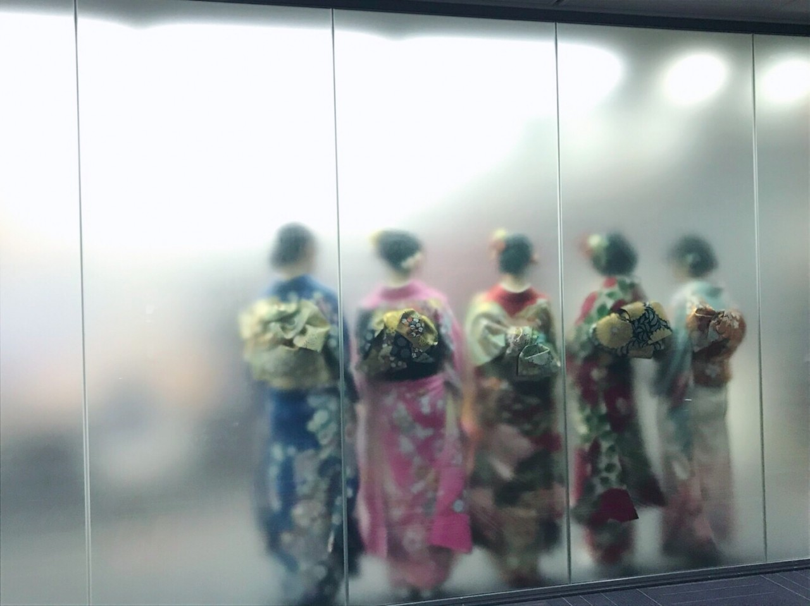
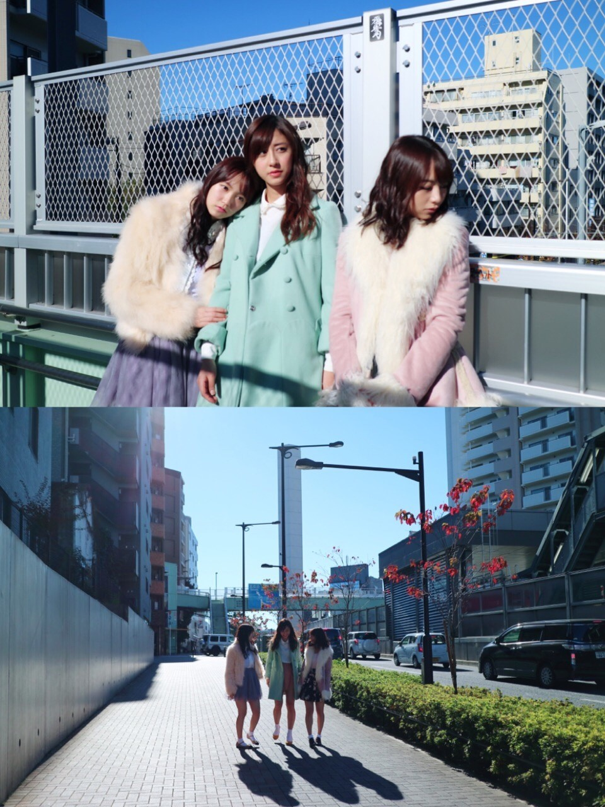
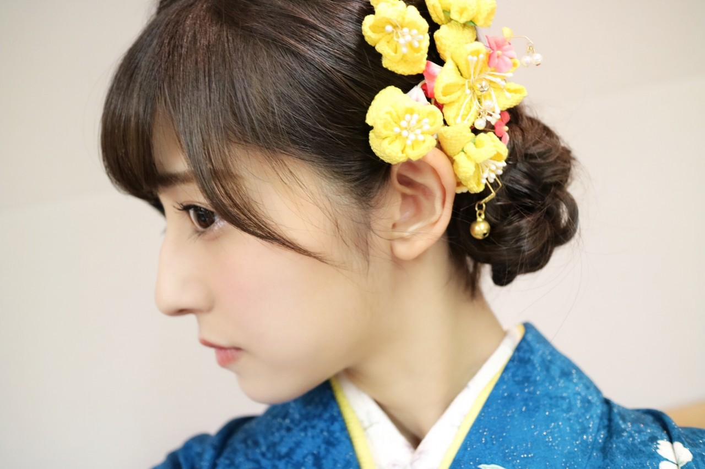

| 2017/01 08 Sun | 宇宙飛行士への手紙。 |
ちはるーむへようこそ。
成人をお祝いしてくれた皆さん
本当にありがとうございます！！
沢山のお祝いコメント、
とても嬉しく思っております(﹡ˆ ˆ﹡)

わたし的に好きな写真。
インタビューを受けている私たちの後ろ姿！
後ろ姿も素敵なのって
着物ならではだと思うので...◎
磨りガラスで少しぼやけてるのも良き。
そして告知し忘れていたのですが...
(755には書いたんだけど)
発売中のBOMBさんに
ひめたんと、きいと、3人で
大人っぽいグラビアを載せていただいてます！
オフショット。

エレベーターに乗る、私たち。
寒くて寒くて少しでもあったかいかと思ったけど、エレベーターも寒かった...
きいはこの時階段を駆け下りていました。笑

この日は晴天に恵まれて
清々しい気持ちで撮影できました！
下の写真の時は自由に話しながら歩いて〜と
言われながらの撮影でした。
何話したかな...( ◦˙ ˙◦ )
でも多分ご飯何食べた？とか
昨日何時に寝た？とか
たわいも無い話だったと思います☺︎
誌面には屋上で撮った写真もあるのですが...
すごいラーメンの美味しい匂いがして
お腹空いちゃったんだよね笑
成人記念グラビア。
私の好きな雰囲気で、
凄い素敵に撮っていただいきました。
是非見てください◎
-----------------------------------♡
♬ ChihaMusic
「宇宙飛行士への手紙」BUMP OF CHICKENさん
歌詞が成人を迎える私たちに
どこかシンクロする気がする。
昔のことを思い出したり
これから先未来のことを考えたり。
毎日を大切に生きようと
改めて感じることのできる曲。
中学時代にも聞いていたけど
その時とはこの曲の感じ方が
違っている気がする。
時が経って年を重ねるってこういう事なのかな。
"今もいつか過去になって
取り戻せなくなるから
それが未来の 今のうちに
ちゃんと取り戻しておきたいから"
なんて沁みる歌詞なんだろう。
本当にいいなぁ。
明日は朝の情報番組をお見逃しなく...！
成人の日という事で
もしかしたら私たちが見られるかも◎

お気に入りの髪飾り。
おやすみ
斎藤ちはる
コメント(334)
2017/01/08 20:12